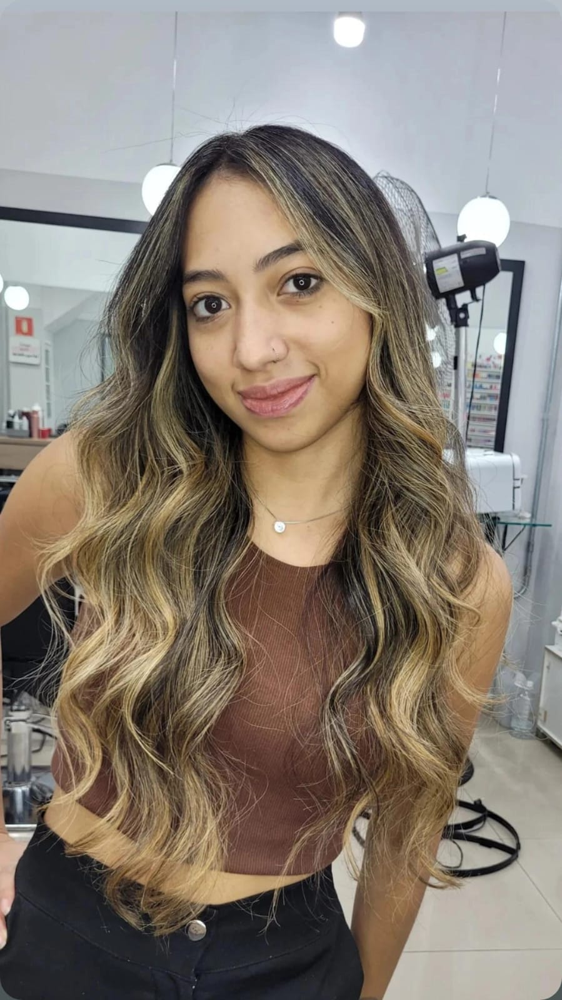
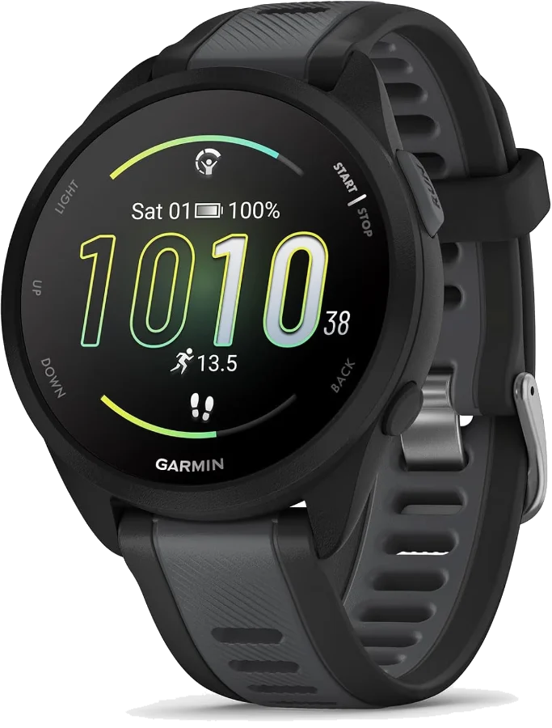
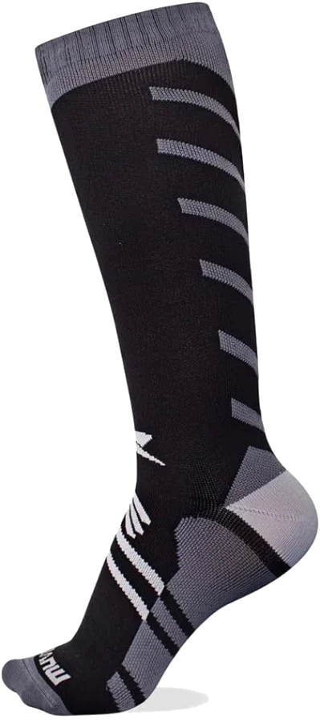

Presente para Quem Gosta de Correr: 15 Ideias que Todo Corredor Vai Gostar


- 15 ideiasdo fone ao livro de corrida
- 5 perfis de corredortecnologia, conforto, treino, leitura
- 3 lojas comparadasAmazon, Mercado Livre e Shopee
Neste artigo
Quem convive com alguém que ama correr sabe que os corredores têm algumas características bem curiosas.
Eles acordam cedo em pleno domingo para correr.
Viajam para participar de provas.
Compram relógios que mostram dezenas de métricas que a maioria das pessoas nem entende.
E, claro, adoram qualquer acessório que possa melhorar a experiência durante os treinos.
Por isso, encontrar um presente para quem gosta de correr costuma ser mais fácil do que parece. O segredo está em escolher algo que realmente faça parte da rotina dessa pessoa.
Pode ser um item para os treinos, algo voltado para recuperação muscular, um acessório útil para o dia a dia ou até mesmo uma lembrança relacionada ao universo da corrida.
Para ajudar na escolha, reunimos 15 sugestões que combinam utilidade, diversão e aquele tipo de presente que provavelmente será usado muito mais do que apenas uma vez.
Se você tem pouco tempo.
Três escolhas para decidir agora. A lista completa vem logo abaixo.

Garmin Forerunner 165
Relógio com GPS que ajuda a acompanhar cada treino.
R$ 1803,90Ver oferta

Meia de Compressão Arrow Muvin
Pequeno, útil e entra na rotina de quem corre sempre.
R$ 86,90Ver oferta

Livro Nascidos Para Correr
Um livro que inspira e foge dos acessórios.
R$ 57,90Ver oferta
Seleção O que dar?
15 presentes, cada um com nota, prós e contras e o preço nas três lojas. Toque no coração para guardar os que você gostou.
Mostrando 15 de 15 presentes · preços de exemplo
1. Fone de Ouvido Esportivo
Prós e contras
- Liberdade para treinar sem fio
- Fica firme durante a corrida
- Depende de carregar a bateria
- Amazon R$ 199,90 Ver oferta
- Mercado Livre Melhor oferta R$ 187,90 Ver oferta
- Shopee R$ 211,90 Ver oferta
Se existe um acessório quase obrigatório para muitos corredores, provavelmente é um bom fone de ouvido.
Porque vamos combinar uma coisa.
Nem todo mundo consegue correr ouvindo apenas a própria respiração.
Muita gente gosta de treinar ouvindo música, podcasts ou até aqueles áudios motivacionais que fazem a pessoa acreditar que consegue correr mais alguns quilômetros.
Um fone esportivo costuma ser uma escolha bastante segura porque faz parte da rotina de praticamente qualquer corredor.
Além disso, é um presente que pode ser usado imediatamente.
Se você está procurando algo útil e com grande chance de agradar, essa é uma das primeiras opções que eu consideraria.
2. Garmin Forerunner 165
Prós e contras
- GPS e métricas completas
- Tela fácil de ler no treino
- Investimento mais alto
- Amazon R$ 1993,90 Ver oferta
- Mercado Livre R$ 1898,90 Ver oferta
- Shopee Melhor oferta R$ 1803,90 Ver oferta
Existe um momento na vida de muitos corredores em que eles começam a se interessar por números.
Ritmo.
Distância.
Cadência.
Frequência cardíaca.
E uma série de métricas que parecem saídas de uma nave espacial.
É exatamente por isso que os relógios Garmin são tão desejados dentro do universo da corrida.
O Forerunner 165 oferece recursos avançados para monitorar treinos, acompanhar evolução e ajudar o corredor a entender melhor seu desempenho.
Talvez não seja o presente mais barato desta lista.
Mas certamente está entre aqueles que mais fazem os olhos de um corredor brilharem.
Especialmente se a pessoa já corre com frequência e gosta de acompanhar resultados.
3. Cinto de Corrida FlipBelt
Prós e contras
- Leva celular e chaves sem balançar
- Discreto e confortável
- Depende de acertar o tamanho
- Amazon Melhor oferta R$ 164,90 Ver oferta
- Mercado Livre R$ 176,90 Ver oferta
- Shopee R$ 169,90 Ver oferta
Quem nunca correu talvez não imagine o quanto carregar objetos pode ser incômodo durante um treino.
Celular.
Chaves.
Documento.
Cartão.
Tudo isso parece ficar duas vezes mais pesado quando você está correndo.
É justamente aí que o FlipBelt se destaca.
Ele permite transportar pequenos objetos de forma confortável, sem ficar balançando ou incomodando durante o percurso.
Pode parecer um detalhe simples.
Mas qualquer corredor que já tentou correr segurando o celular na mão entende imediatamente o valor desse presente.
E muitas vezes são justamente esses pequenos acessórios que acabam sendo usados todos os dias.
4. Kindle Paperwhite
Prós e contras
- Boa para os dias de descanso
- Leve e com tela que não cansa
- Foge do tema corrida
- Amazon R$ 798,90 Ver oferta
- Mercado Livre Melhor oferta R$ 750,90 Ver oferta
- Shopee R$ 846,90 Ver oferta
À primeira vista, talvez o Kindle não pareça um presente relacionado à corrida.
Mas existe uma coisa que muitos corredores têm em comum.
Eles adoram aprender sobre o esporte.
Treinamento.
Nutrição.
Histórias de maratonistas.
Biografias inspiradoras.
Estratégias para provas.
E o Kindle acaba sendo uma porta de entrada para tudo isso.
Além disso, ele também serve para qualquer outro tipo de leitura.
É aquele presente que continua sendo útil durante muitos anos.
Aliás, se a pessoa que você quer presentear está entrando na casa dos 30 anos, vale conferir também nossa seleção de presentes para homens de 30 anos, que reúne várias opções de tecnologia e estilo de vida.
5. Pistola de Massagem Arboleaf
Prós e contras
- Ajuda a relaxar depois do treino
- Várias intensidades
- Pesada para levar na bolsa
- Amazon R$ 314,90 Ver oferta
- Mercado Livre R$ 299,90 Ver oferta
- Shopee Melhor oferta R$ 284,90 Ver oferta
Existe uma frase que todo corredor já disse em algum momento:
"Hoje minhas pernas estão acabadas."
Depois de treinos longos ou provas mais intensas, a recuperação muscular se torna quase tão importante quanto o próprio treino.
É justamente aí que entra a pistola de massagem.
Ela ajuda a aliviar tensões musculares, reduzir desconfortos e acelerar aquela sensação de recuperação que todo corredor procura.
O que eu gosto nessa opção é que ela demonstra atenção aos detalhes.
Porque mostra que você pensou não apenas na corrida em si, mas também no bem-estar da pessoa depois dos treinos.
E convenhamos: depois de alguns quilômetros extras, isso costuma ser muito valorizado.
6. Meia de Compressão Arrow Muvin
Prós e contras
- Preço acessível
- Ajuda na circulação nos longões
- Exige saber o tamanho
- Amazon Melhor oferta R$ 86,90 Ver oferta
- Mercado Livre R$ 92,90 Ver oferta
- Shopee R$ 89,90 Ver oferta
Se você não corre, talvez olhe para uma meia de compressão e pense:
"É só uma meia."
Mas experimente falar isso para alguém que corre meia maratona ou maratona.
A conversa muda rapidamente.
As meias de compressão ajudam a proporcionar mais conforto durante os treinos e provas, especialmente em distâncias maiores. Muitos corredores também gostam da sensação de suporte que elas oferecem durante a atividade física.
É o tipo de presente que talvez não gere aquele efeito "uau" ao abrir a embalagem, mas que acaba sendo usado com frequência.
E existe uma regra não escrita sobre presentes: os melhores costumam ser aqueles que realmente entram na rotina da pessoa.
7. Garmin Forerunner 55
Prós e contras
- GPS bom para quem está começando
- Bateria dura bastante
- Menos recursos que o 165
- Amazon R$ 1198,90 Ver oferta
- Mercado Livre Melhor oferta R$ 1126,90 Ver oferta
- Shopee R$ 1270,90 Ver oferta
Nem todo corredor precisa de um relógio super avançado cheio de recursos profissionais.
Muitas vezes, o que ele procura é algo confiável, fácil de usar e que entregue as informações mais importantes durante os treinos.
É exatamente aí que o Garmin Forerunner 55 se encaixa.
Ele acompanha ritmo, distância, frequência cardíaca e diversos dados que ajudam quem está evoluindo na corrida.
Eu gosto bastante dessa opção porque ela atende tanto quem começou há pouco tempo quanto quem já corre regularmente.
É aquele presente que costuma agradar porque resolve um problema real.
E quando o assunto é corrida, acompanhar a própria evolução faz parte da diversão.
8. Mochila de Hidratação CamelBak
Prós e contras
- Hidratação nos treinos longos
- Bolsos para levar o essencial
- Mais útil para quem corre longas distâncias
- Amazon R$ 366,90 Ver oferta
- Mercado Livre R$ 349,90 Ver oferta
- Shopee Melhor oferta R$ 331,90 Ver oferta
Existe um momento na vida do corredor em que uma garrafinha na mão simplesmente deixa de ser suficiente.
Normalmente isso acontece quando surgem os treinos mais longos, as provas de resistência ou as primeiras aventuras em trilhas.
A CamelBak é praticamente uma referência quando falamos de hidratação esportiva.
A mochila permite carregar água de forma confortável, mantendo as mãos livres durante todo o percurso.
Para quem participa de corridas longas, trilhas ou provas de endurance, esse presente costuma ser extremamente útil.
Além disso, tem aquele efeito que eu adoro em presentes: algo que a pessoa talvez não comprasse para si mesma naquele momento, mas que passa a usar constantemente depois que recebe.
9. Óculos Oakley Sutro Lite
Prós e contras
- Protege dos raios solares
- Leve e firme no rosto
- Valor mais alto
- Amazon Melhor oferta R$ 871,90 Ver oferta
- Mercado Livre R$ 934,90 Ver oferta
- Shopee R$ 898,90 Ver oferta
Vamos falar sobre uma verdade universal da corrida.
O sol nem sempre colabora.
Dependendo do horário do treino, ele parece ter uma missão pessoal de acertar exatamente os olhos do corredor.
Os óculos esportivos ajudam bastante nessa situação, principalmente em corridas ao ar livre.
E dentro desse universo, a Oakley é uma marca muito desejada por quem pratica esportes.
O Sutro Lite combina proteção, conforto e um visual que muitos corredores adoram.
É aquele tipo de presente que mistura utilidade com um toque de estilo.
Porque sim, corredores também gostam de equipamentos bonitos.
Mesmo que depois de alguns quilômetros eles estejam suando como se tivessem atravessado um deserto.
10. Amazfit Bip 5
Prós e contras
- Bom custo para um relógio com GPS
- Bateria longa
- Menos preciso que os Garmin
- Amazon R$ 498,90 Ver oferta
- Mercado Livre Melhor oferta R$ 468,90 Ver oferta
- Shopee R$ 528,90 Ver oferta
Nem todo mundo quer investir imediatamente em um Garmin.
E tudo bem.
O Amazfit Bip 5 costuma aparecer justamente como uma alternativa interessante para quem deseja acompanhar treinos e atividades físicas sem gastar tanto.
Ele oferece monitoramento de exercícios, frequência cardíaca, notificações do celular e diversas funções que fazem sentido para quem corre.
O que eu gosto nesse presente é o equilíbrio.
Ele entrega bastante funcionalidade e costuma agradar tanto corredores iniciantes quanto pessoas que já possuem uma rotina de exercícios.
Se você está procurando um presente para quem gosta de correr e quer algo tecnológico sem entrar na faixa de preço dos modelos mais avançados, vale olhar essa opção com carinho.
- presente para homem
- presente para namorado
Muitos desses acessórios também acabam sendo excelentes opções para quem está procurando um presente para namorado esportista ou para aquela pessoa que transforma qualquer conversa em um assunto sobre corrida, provas e novos objetivos.
11. Manguito UV Lupo Sport
Prós e contras
- Protege do sol nos braços
- Barato e fácil de acertar
- Proposta simples
- Amazon R$ 83,90 Ver oferta
- Mercado Livre R$ 79,90 Ver oferta
- Shopee Melhor oferta R$ 75,90 Ver oferta
Algumas pessoas gostam de flores.
Quem vê um manguito pela primeira vez normalmente pensa:
"Será que isso realmente faz diferença?"
A resposta costuma vir depois de alguns treinos sob o sol.
O Manguito UV Lupo Sport ajuda na proteção contra os raios solares e ainda proporciona mais conforto durante corridas em dias quentes. Para quem treina frequentemente ao ar livre, é um acessório que acaba entrando na rotina sem muito esforço.
E existe um detalhe interessante: corredores costumam valorizar bastante os pequenos itens que melhoram a experiência dos treinos.
Não é um presente chamativo como um relógio esportivo, mas é uma daquelas escolhas inteligentes que mostram que você realmente pensou nos hábitos da pessoa.
12. Livro Nascidos Para Correr
Prós e contras
- Inspira quem ama correr
- Ótimo custo
- Para quem gosta de ler
- Amazon Melhor oferta R$ 57,90 Ver oferta
- Mercado Livre R$ 61,90 Ver oferta
- Shopee R$ 59,90 Ver oferta
Se você conhece alguém que gosta de correr, existe uma boa chance dessa pessoa também gostar de ouvir histórias sobre corrida.
E poucas obras são tão famosas nesse universo quanto Nascidos Para Correr.
O livro mistura aventura, ciência, cultura e relatos inspiradores sobre um povo mexicano conhecido pela incrível capacidade de percorrer longas distâncias.
Mesmo quem já corre há anos costuma citar essa leitura como uma das mais marcantes dentro do esporte.
É aquele presente que vai além do equipamento.
Ele alimenta a paixão pela corrida.
E isso costuma ter muito valor para quem transforma cada treino em um desafio pessoal.
Se a pessoa também gosta de leitura, essa combinação fica ainda melhor.
Aliás, ele faz uma dupla perfeita com o Kindle que apareceu anteriormente na lista.
13. Boné Adidas Superlite 3.0 para Corrida
Prós e contras
- Leve e respirável
- Protege do sol
- Pouco diferente de um boné comum
- Amazon R$ 149,90 Ver oferta
- Mercado Livre Melhor oferta R$ 140,90 Ver oferta
- Shopee R$ 158,90 Ver oferta
Existe uma relação quase inevitável entre corrida e sol.
E quando os treinos acontecem pela manhã ou durante a tarde, um bom boné faz toda a diferença.
O Adidas Superlite é bastante popular justamente porque foi pensado para atividades esportivas. Ele é leve, confortável e ajuda a reduzir o incômodo causado pela luz solar durante o percurso.
Pode parecer um presente simples à primeira vista.
Mas corredores sabem que encontrar um boné realmente confortável para correr nem sempre é tão fácil quanto parece.
Por isso, acaba sendo um presente útil, prático e que provavelmente será utilizado diversas vezes ao longo da semana.
14. JBL Endurance Peak 3
Prós e contras
- Resistente ao suor
- Encaixe firme na orelha
- Precisa de bateria
- Amazon R$ 524,90 Ver oferta
- Mercado Livre R$ 499,90 Ver oferta
- Shopee Melhor oferta R$ 474,90 Ver oferta
Lembra quando falamos sobre fones esportivos no início da lista?
Aqui estamos entrando em uma categoria mais robusta.
O JBL Endurance Peak 3 foi desenvolvido justamente para atividades físicas mais intensas.
O encaixe é firme, a resistência ao suor é excelente e a bateria costuma agradar quem passa muitas horas treinando.
Para corredores que gostam de ouvir música, podcasts ou audiolivros durante os treinos, um bom fone pode literalmente mudar a experiência da corrida.
E sejamos sinceras…
Existem dias em que a playlist certa ajuda muito mais do que gostaríamos de admitir.
Principalmente quando faltam alguns quilômetros para terminar o treino.
Se a pessoa leva a corrida a sério, esse é um daqueles presentes que dificilmente ficarão esquecidos em uma gaveta.
15. Stanley Fast Flow Aerolight
Prós e contras
- Mantém a água gelada
- Bonito para o dia a dia
- Não é feita para levar correndo
- Amazon Melhor oferta R$ 222,90 Ver oferta
- Mercado Livre R$ 238,90 Ver oferta
- Shopee R$ 229,90 Ver oferta
Todo corredor aprende rapidamente uma lição importante:
hidratação não é opcional.
A Stanley Fast Flow Aerolight combina duas características que costumam agradar bastante: leveza e praticidade.
Ela é fácil de transportar, possui excelente qualidade de construção e ajuda a manter a bebida na temperatura adequada por mais tempo.
Além disso, é aquele tipo de item que acompanha a pessoa não apenas nos treinos, mas também no trabalho, viagens, academia e diversas outras situações do dia a dia.
Eu gosto bastante de presentes assim.
Eles conseguem ser úteis dentro e fora do contexto principal.
E isso aumenta muito as chances de serem usados constantemente.
Como escolhemos estas sugestões
Como selecionamos estas sugestões
Quem corre regularmente costuma receber muitos presentes genéricos.
Canecas.
Chaveiros.
Camisetas aleatórias.
O problema é que a maioria desses itens acaba ficando esquecida em alguma gaveta.
Para esta seleção, procuramos reunir produtos que realmente façam sentido para alguém apaixonado por corrida.
Alguns ajudam durante os treinos.
Outros melhoram a recuperação muscular.
E alguns simplesmente tornam a experiência de correr mais confortável e divertida.
A ideia é apresentar opções para diferentes orçamentos e perfis de corredores, desde quem começou recentemente até quem já participa de provas e maratonas.
Comparativo rápido.
Os 15 presentes lado a lado, com o menor preço encontrado.
| Presente | Nota | A partir de | Ação |
|---|---|---|---|
| 01Fone de Ouvido Esportivo | 8,7 | R$ 187,90 | Ver oferta |
| 02Garmin Forerunner 165 | 9,3 | R$ 1803,90 | Ver oferta |
| 03Cinto de Corrida FlipBelt | 8,6 | R$ 164,90 | Ver oferta |
| 04Kindle Paperwhite | 9,0 | R$ 750,90 | Ver oferta |
| 05Pistola de Massagem Arboleaf | 8,5 | R$ 284,90 | Ver oferta |
| 06Meia de Compressão Arrow Muvin | 8,4 | R$ 86,90 | Ver oferta |
| 07Garmin Forerunner 55 | 8,8 | R$ 1126,90 | Ver oferta |
| 08Mochila de Hidratação CamelBak | 8,6 | R$ 331,90 | Ver oferta |
| 09Óculos Oakley Sutro Lite | 8,9 | R$ 871,90 | Ver oferta |
| 10Amazfit Bip 5 | 8,5 | R$ 468,90 | Ver oferta |
| 11Manguito UV Lupo Sport | 8,2 | R$ 75,90 | Ver oferta |
| 12Livro Nascidos Para Correr | 8,9 | R$ 57,90 | Ver oferta |
| 13Boné Adidas Superlite 3.0 para Corrida | 8,3 | R$ 140,90 | Ver oferta |
| 14JBL Endurance Peak 3 | 8,6 | R$ 474,90 | Ver oferta |
| 15Stanley Fast Flow Aerolight | 8,4 | R$ 222,90 | Ver oferta |
Qual Presente Combina com Cada Tipo de Corredor?
Se você ainda está em dúvida sobre qual escolher, uma forma simples de decidir é pensar no perfil da pessoa.
Para quem está começando a correr
As opções que costumam fazer mais sentido são:
Para quem já corre regularmente
Aqui vale considerar:
Para corredores mais experientes
Alguns presentes costumam fazer bastante sucesso:
Para quem ama tecnologia
Difícil errar com:
Para quem participa de provas e maratonas
Boas escolhas incluem:
Perguntas Frequentes
O que dar de presente para quem gosta de correr?
Os presentes mais procurados costumam ser relógios esportivos, fones de ouvido para corrida, acessórios de hidratação, itens de recuperação muscular e equipamentos que ajudam durante os treinos.
Qual é o melhor presente para um corredor iniciante?
Produtos como Amazfit Bip 5, fones esportivos, bonés para corrida e Kindle costumam ser excelentes escolhas para quem começou a correr recentemente.
Vale a pena dar um relógio esportivo de presente?
Sim. Muitos corredores utilizam relógios esportivos para acompanhar distância, ritmo, frequência cardíaca e evolução dos treinos. É um dos presentes mais desejados dentro desse universo.
O que um corredor usa no dia a dia?
Além dos equipamentos de corrida, muitos corredores utilizam garrafas térmicas, livros sobre o esporte, mochilas esportivas, fones bluetooth e acessórios de recuperação muscular.
Qual presente escolher para alguém que corre maratonas?
Itens como Garmin Forerunner 165, CamelBak, FlipBelt, Oakley Sutro Lite e pistolas de massagem costumam ser bastante valorizados por corredores de longa distância.
Um Presente que Acompanha Muitos Quilômetros
Escolher um presente para quem gosta de correr costuma ser mais fácil quando você pensa naquilo que faz parte da rotina da pessoa.
Alguns corredores adoram tecnologia. Outros gostam de conforto, recuperação muscular ou acessórios que facilitem os treinos. E existem aqueles que simplesmente ficam felizes com qualquer item que os aproxime ainda mais do esporte que amam.
Entre as opções desta lista, certamente existe alguma que combina com o perfil da pessoa que você quer presentear.
E a melhor parte é que muitos desses presentes não ficam guardados em uma prateleira. Eles acompanham treinos, provas, conquistas e metas que serão lembradas por muito tempo.
Se você ainda está explorando outras ideias, vale conferir também nossas sugestões de presentes para homens, presentes para namorado e outras listas criadas para diferentes estilos e ocasiões. Às vezes, a escolha perfeita aparece justamente quando encontramos algo que combina com a personalidade da pessoa de forma natural.
A.G.
Somos um site associado da Amazon e, portanto, recebemos comissões por compras qualificadas. Como se trata de um acordo de intermediação entre nosso site e a Amazon, os valores elegíveis de comissionamento não são repassados para os usuários.
Texto a atualizar quando Mercado Livre e Shopee estiverem ativos Ler a declaração de afiliados